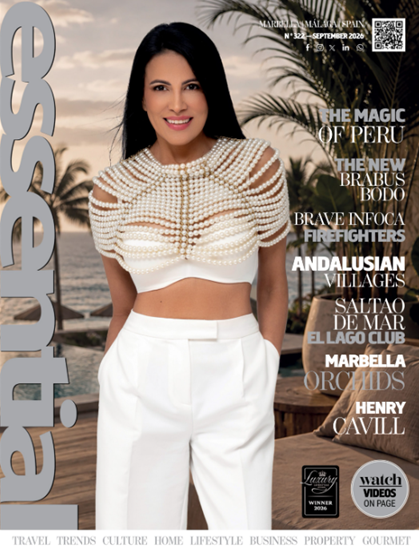
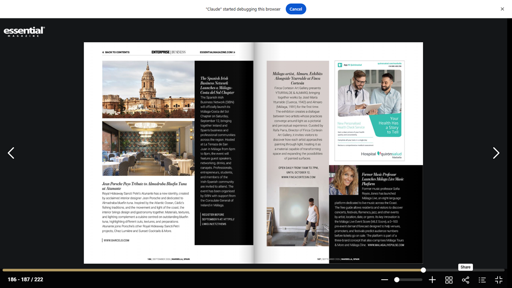

“Former Music Professor Launches Málaga Live Music Platform”
Essential Magazine — the Marbella-based luxury lifestyle title — featured Málaga Live in its September 2026 edition (No. 322, p. 187), under the headline above.
The article introduces Málaga Live as a free, eight-language platform for discovering live music across Málaga city and Costa del Sol, launched by former classical-music professor Sofía Reyes Jones. It notes that the free guide lets residents and visitors find concerts, festivals, flamenco, jazz and other events by artist, location, date or genre.
Essential singled out the platform's key innovation — the Málaga Live Event Score (MLE Score), a 0–100 pre-event demand forecast that helps venues, promoters and festivals predict audience numbers before tickets go on sale. The piece also notes that Málaga Live is the first of a three-brand concept alongside Málaga Tours & More and Málaga Dine.
Source: Essential Magazine, September 2026 Edition (No. 322), p. 187 — “Former Music Professor Launches Málaga Live Music Platform.” The full digital edition is on essentialmagazine.com (Essential membership required to read).
